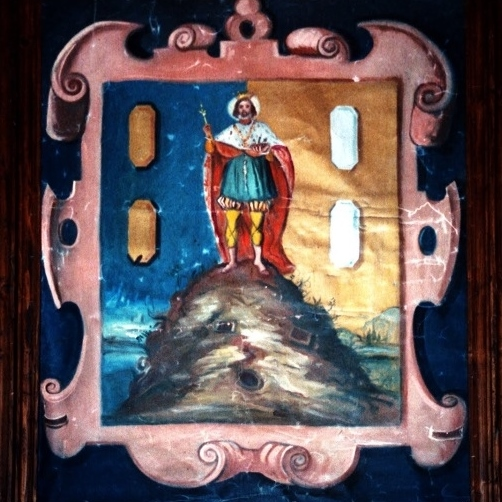
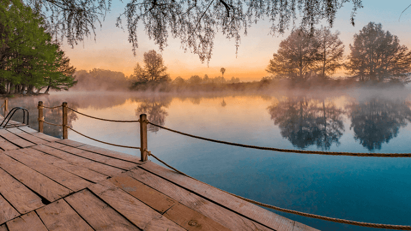

SAN lUIS POTOSI
San Luis Potosí es una ciudad y municipio mexicano,
capital y ciudad más poblada del estado de San Luis Potosí, La ciudad se encuentra
en la zona centro norte del estado, sede de los poderes ejecutivo, legislativo y judicial del estado.
Cuenta con una altitud media sobre el nivel del mar de 1860 msnm. Desde 2005, la mancha urbana colinda
con los municipios de Cerro de San Pedro, Villa de Zaragoza, Soledad de Graciano Sánchez, Mexquitic de Carmona
y Villa de Arriaga.
Su población municipal es de 824 299 habitantes,
su zona metropolitana alcanza una población de aproximadamente 1,345,443 habitantes,6789 lo cual la ubica
como la octava zona metropolitana más poblada de México. El centro histórico de la ciudad es reconocido
como Patrimonio de la Humanidad por parte de la Unesco. Su importante y acelerado desarrollo industrial
ha favorecido de manera positiva en el crecimiento económico y demográfico de la zona.

-
Rio verde
Este lugar cuenta con lagunas y manantiales a su alrededor, por lo que es una gran opción
para pasar el día con tu familia. Aquí puedes disfrutar de un picnic en sus espacios o ir a comer alos
lugares cercanos despues de haber paseado por sus senderos.
Se le considera uno de los mejores atractivos naturales en San Luis Potosí
gracias a que el precio de entradas es muy accesible. Con esto haces posible que el viaje no se vuelva
caro y poder usar ese dinero en otras atracciones.
